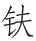

昨夜裙带解，今朝蟢子飞 [1] 。铅华不可弃 [2] ，莫是藁砧归 [3] ？
【题解】
南朝陈徐陵辑梁以前诗十卷，号《玉台新咏》，除乐府民歌外，多为南朝文人及梁朝诸君主有关宫廷生活、男女艳情的绮靡之作。后来文人模仿所作即称为“宫体”，亦称“玉台体”。此诗题乃是标明所咏为闺中艳情。原诗十二首，此为第十一首。
【评析】
诗描写一闺中思妇，忽然连见“喜兆”：裙带自解、蟢子出现，不禁惊喜自疑：丈夫要回来了？于是“亲研螺黛，预贮兰膏”（俞陛云《诗境浅说•续编》），可见在此之前，她正像《诗经•卫风•伯兮》中的女主人公一样：“岂无膏沐，谁适为容？”于是就“首如飞蓬”了。女子眷恋丈夫之情，宁如此深挚。两见“喜兆”，即自信丈夫将归，其事可信，其情可悯！呜呼！二十字小小“喜剧”，包含多少思妇之悲剧！
【注释】
[1] 蟢（xǐ）子：蜘蛛的一种，即蟏蛸，又名壁蟢、壁钱、喜子、喜蛛、喜母。北齐刘昼《刘子•鄙名》：“今野人昼见蟢子者，以为有喜乐之瑞。”此二句是指女主人公将裙带自解、蟢子出现都视为喜兆。
[2] 铅华：搽脸的粉。张衡《定情赋》：“思在面为铅华兮，患离尘而无光。”
[3] 莫是：恐怕是，莫不是。藁砧：古代处死罪，罪人席藁伏于砧上，

以斩之。 ：与“夫”同音，故“藁砧”为“丈夫”隐语，后世沿用以为丈夫代称。宋唐庚《自笑》诗：“儿馁嗔郎罢，妻寒望藁砧。”